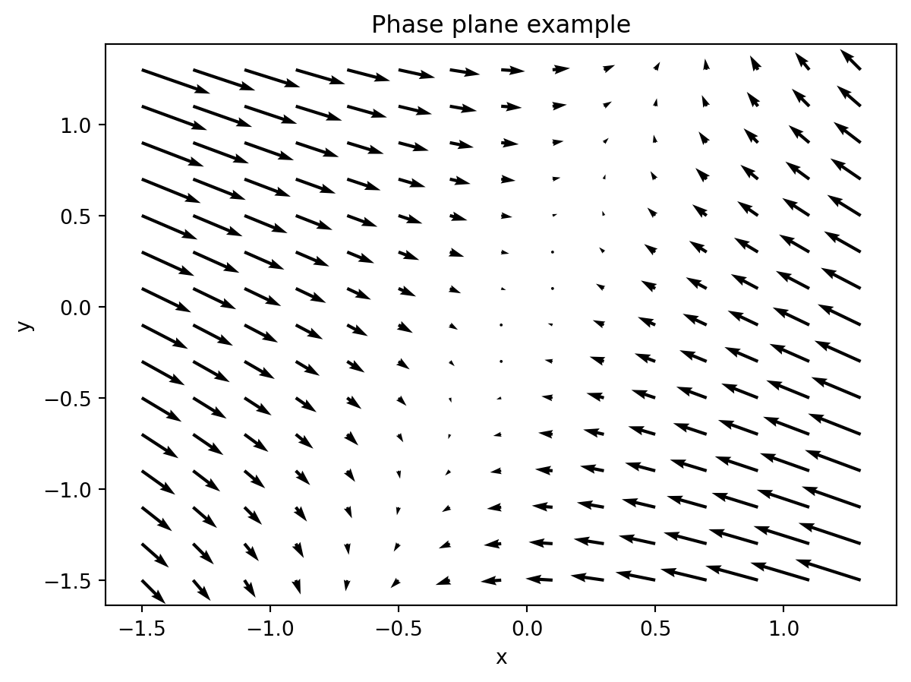
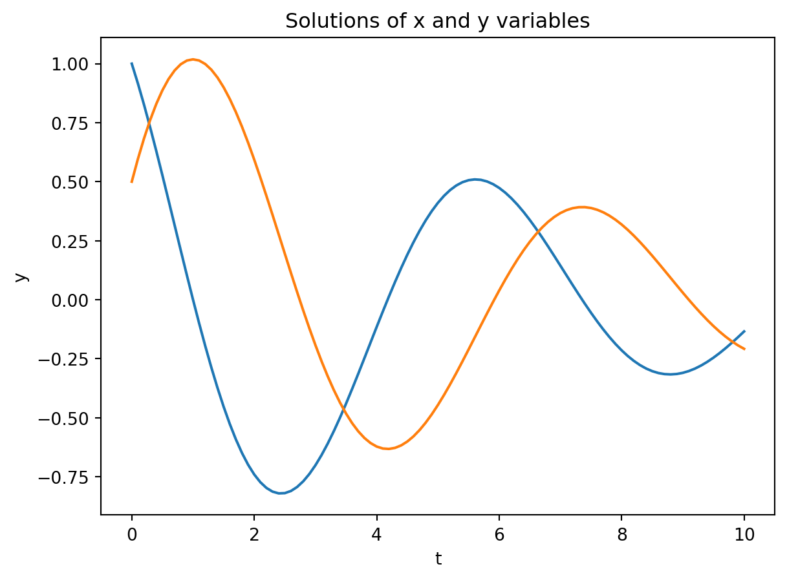
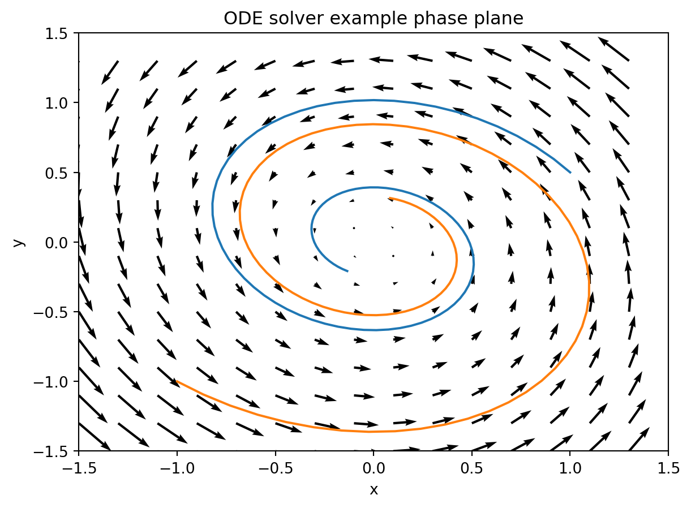

#Necessary imports
import numpy as np #package for work with arrays and matrices
import matplotlib.pyplot as plt #package with plotting capabilities
from scipy.integrate import odeint8 Phase portraits in Python
8.0.1 phase plane plots via quiver
We are going to plot phase diagrams for linear ODEs that have the form
\[ \begin{aligned} dx/dt &=& ax + by \\ dy/dt &=& cx + dy \end{aligned} \]
Python’s ax.quiver() function allows displays vectors with arrows made of the components \((u,v)\), which is exactly what we need. The function takes 4 inputs \((x,y,u,v)\): \(x\) and \(y\) are the grid points and \(u\) and \(v\) are the \(u\) and \(v\) components of the vector, which are given by our ODEs.
In order to make the grid points \((x,y)\), we will use the function np.meshgrid(). It’s a pretty handy function that takes as input a range of \(x\) and \(y\) values and returns two matrices \(x\), \(y\) that together give us the grid points. Here is the code to produce a grid with an \(x\) and \(y\) range from (-1.5, 1.5) with a spacing of 0.2, we could do the following:
xmin = -1.5 #change the parameters here to control the range of the axes
xmax = 1.5
ymin = -1.5
ymax = 1.5
dx = 0.2 #set the size of the x-step on the grid
dy = 0.2 #set the size of the y-step on the grid
X = np.arange(xmin, xmax, dx)
Y = np.arange(ymin, ymax, dy)
x, y = np.meshgrid(X,Y) #create a gridDefine the arrays dx and dy based on the ODE in order to compute the flow vectors on that grid. Here is a linear example:
a = -2
b = 1
c = 1
d = 0
dx = a*x+b*y #overwrites the other dx
dy = c*x+d*y #overwrites the other dyThen plot the arrows given by arrays dx,dy at points x,y:
fig, ax = plt.subplots()
q = ax.quiver(x, y, dx, dy)
plt.xlabel('x')
plt.ylabel('y')
plt.title('Phase plane example')
plt.show()
8.0.2 ODE solutions using odeint
Python has an entire suite of ode solvers. We’ll use the function odeint, with documentation provided here: https://docs.scipy.org/doc/scipy/reference/generated/scipy.integrate.odeint.html
This requires defining a function fun that sets the two functions for the two-variable ODE, to be called by the odeint, together with parameter values a, b, c, d. There are many other options that you can read about in the documentation page. Here is the sample code:
xmin = -1.5 #change the parameters here to control the range of the axes
xmax = 1.5
ymin = -1.5
ymax = 1.5
dx = 0.2 #set the size of the x-step on the grid
dy = 0.2 #set the size of the y-step on the grid
X = np.arange(xmin, xmax, dx)
Y = np.arange(ymin, ymax, dy)
x, y = np.meshgrid(X, Y); #create a grid
a = -0.3
b = -1
c = 1
d = 0
dx = a*x+b*y
dy = c*x+d*y
# define the function for the ODES: note the order of inputs
def fun(xy, t, a, b, c, d): # inputs are: variable array, time, any parameters
newxy = [a*xy[0]+b*xy[1], c*xy[0]+d*xy[1]]
return newxy
# Set the initial values, the vector of times, and call the ODE solver
init = [1, 0.5] #[intial x, initial y]
t = np.linspace(0, 10, 101) # create time vector
sol = odeint(fun, init, t, args=(a, b, c, d)) # calculate numeric solution of ODE defined in fun
# Plot the solutions over time
plt.plot(t, sol)
plt.xlabel('t')
plt.ylabel('y')
plt.title('Solutions of x and y variables')
plt.show()
# plot the arrows given by arrays dx,dy at points x,y:
fig, ax = plt.subplots()
q = ax.quiver(x, y, dx, dy)
plt.xlim(-1.5,1.5)
plt.ylim(-1.5,1.5)
ax.plot(sol[:,0], sol[:,1]) # plot the x and the y variable in the phase plane
# Set different initial values, the vector of times, and call the ODE solver again
init = [-1, -1] #[intial x, initial y]
t = np.linspace(0, 10, 101) # create time vector
sol = odeint(fun, init, t, args=(a, b, c, d)) # calculate numeric solution of ODE defined in fun
ax.plot(sol[:,0], sol[:,1]) # plot the x and the y variable in the phase plane
plt.xlabel('x') #use more informative labels for a real model
plt.ylabel('y')
plt.title('ODE solver example phase plane')
plt.show()
